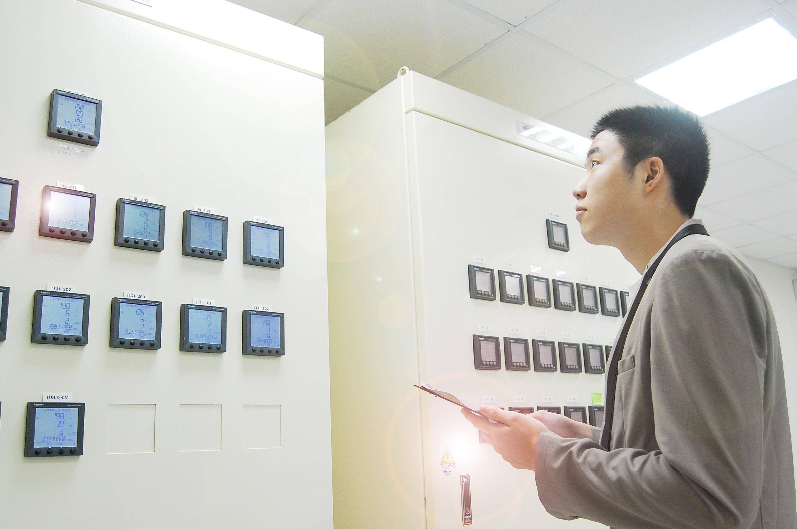
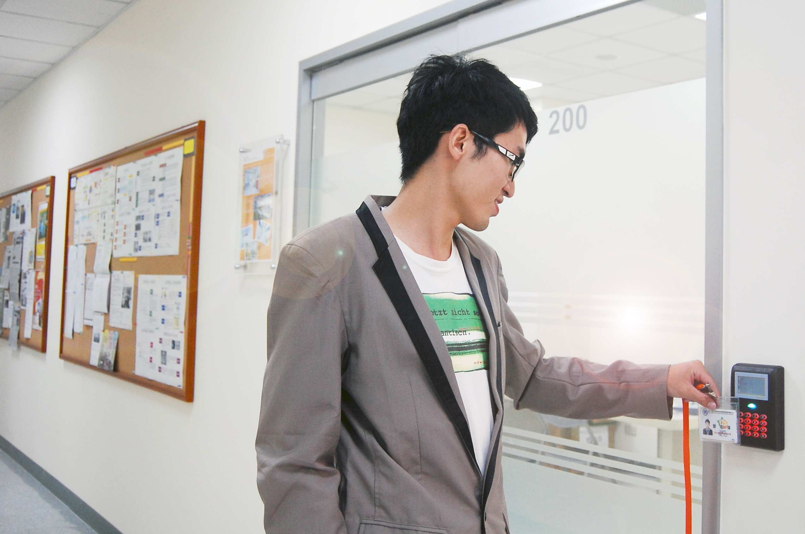
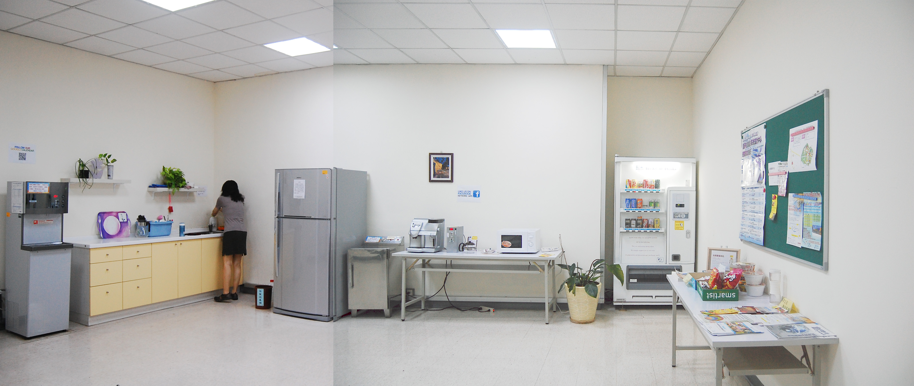

交大產業加速器中心
Softlanding Program
交大產業加速器中心為NBIA(National Business Incubation Association)認證之NBIA SoftLanding International Incubator 之執行團隊(具備國際培育交流互動能量)，可協助進駐企業透過國際育成平台拓展國際市場及在地市場之育成服務。
行政支援
- 提供新創事業公司登記地址
- 政府輔導與培育之計畫申請訊息、各類活動及課程訊息
- 公司電話代接及傳真服務、信件收發
- 公共區域清潔及維護
進駐程序
申請企業或個人提供申請表及「營運計畫書(Business Plan)」，經本中心進駐審查會議通過後辦理進駐事宜
交通資訊
300 新竹科學工業園區新安路5號4樓(緊鄰交大校園)
環境設施特色
符合科學工業園區之消防工安規定
- 室內隔間採防火建材、明確消防逃生動線與指示，以保障公司及員工財產與人身安全
全新空調設備
- 各培育間採獨立空調系統─大金冷暖空調，空調電費依實際使用度數計價。大金冷暖空調系統品質穩定，全年四季均可維持合宜室溫，提高員工工作效率
- 各培育間配備全熱交換系統，隨時補充外界新鮮空氣並排放室內密閉空間，可有效活氧室內空氣，保持員工身心健康
免費上網服務及公共區域無線網路服務
- 各培育間配備網路服務，提供進駐企業商業用途所需之網路頻寬。
-
公共空間提供免費無線上網服務以方便來賓訪客隨時連線使用。
網路電話系統
- 各培育間建置網路電話系統(IP Phone)，提供進駐企業最低價之國內外電話費率，有效節省進駐企業的日常行政成本！
24小時CCTV監視設備
- 育成中心之公共區域及走道均設置監視系統，長時間錄影系統可確保進駐企業的財產安全

符合科學工業園區之消防工安規定
- 室內隔間採防火建材、明確消防逃生動線與指示，以保障公司及員工財產與人身安全
培育間隔間工程
- 相鄰培育間之隔間牆均以隔音棉填塞，並且隔音牆均延伸至建築層板而非輕鋼架天花板下，將彼此雜音干擾降至最低，維持安靜辦公空間
刷卡門禁系統
- 各培育間出入口均配置刷卡門禁設備，協助進駐企業執行人員進出管控機制，以確保公司財產安全無虞

UPS不斷電系統服務
- 中控機房配備UPS不斷電設備，在無預警斷電下可確保全區監控及網路通訊不中斷
充足會議討論空間
- 公共區域建置廠商洽談區，可進行小組討論及訪客接待，無需占用公司內部空間
-
建置1大間訓練教室、2間中型會議室及6間小型會議室，提供會議所需資訊設備，有效提升進駐企業內部空間使用率
設備完善的茶水間
- 包含加速器福利社、冰箱、蒸飯箱、微波爐……各式需求應有盡有

LED照明設備
- 全部配置節電效率高的LED照明系統，符合環保及節能訴求